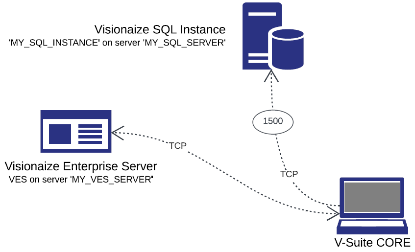

V-Suite CORE接続
V-Suite CORE接続
V-Suite COREからV-Suite Webにデータを転送するには、データ転送ジョブを構成する必要があります。 V-Suite COREプロジェクトごとにデータ転送ジョブを作成する必要があります。同じサーバー上のプロジェクトのV-Suite CORE接続情報は常に同じであるため、 V-Suite、そのサーバーのすべてのデータ転送ジョブに使用できるエイリアスを追加できます。
次の例を考えてみましょう。ここでは、Visionaize Enterprise Server (VES) がサーバー 'MY_VES_SERVER' 上のV-Suite COREにインストールされており、 V-Suite COREデータベース インスタンスの名前が 'MY_SQL_INSTANCE' で、サーバー 'MY_SQL_SERVER' にインストールされており、SQL が次のように構成されています。ポート 1500 でリッスンします。

次の情報を入力して、 V-Suite CORE接続エイリアスを構成します。
V-Suite CORE接続:
- エイリアス- MY_VES_SERVER (または任意の一意の説明的な名前)
- V-Suite CORE SQL Server 名またはIP - MY_SQL_SERVER
- V-Suite CORE SQL インスタンス名- MY_SQL_INSTANCE。デフォルトのインスタンスの場合は空白のままにします。
- TCP ポート- 1500。デフォルト インスタンスの場合はポート番号を空白のままにし、カスタム ポートの場合はポート番号を入力します。
- V-Suite COREサーバー名- MY_VES_SERVER
- V-Suite CORE組み込みの「管理者」パスワード - 組み込みの「admin」ユーザーとして VES にサインインするために使用するパスワードを入力します。
- V-Suite COREバージョン- 使用しているV-Suite COREバージョンを選択します。たとえば、 V-Suite 2017 の場合は 7.0 を選択します。V V-Suite COREアプリケーションでバージョン情報を確認できます。
[接続のテスト]ボタンを押して、有効な接続情報を入力したことを確認します。
「保存」ボタンを押して、新しいV-Suite CORE接続エイリアスを保存します。
接続エラーのトラブルシューティング
CORE 接続のテスト中に接続エラーが発生した場合は、次の手順を試してエラーを解決してください。
- 入力した接続パラメータが正しいことを確認してください。入力した名前にタイプミスがないこと、および選択した CORE バージョンがターゲット サーバーにインストールされているV-Suite COREバージョンと一致していることを確認してください。また、組み込みの「admin」パスワードが正しく入力されていることを再確認してください。
- ターゲットの SQL Server インスタンスがアクセス可能であること、つまり、メンテナンスのために停止していないことを確認してください。
- V-Suiteデータ転送は、特定の条件下ではV-Suite CORE SQL Server に接続できない場合があります。システム管理者に問い合わせて、 V-Suiteデータ転送要件が満たされていることを確認してください。